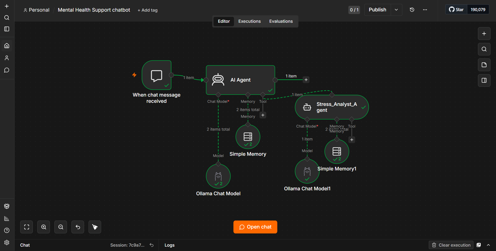

Applied AI Project Report
on
Aria: An Integrated Multi-Agent Cognitive System for Student Wellness and Strategic Stress Analysis Engined by Ollama, LangChain, CrewAI, and n8n Operational Workflows
Submitted as partial fulfillment of
Master of Computer Application Degree
Session 2025-26
By:
Anurag Kumar
Under the guidance of:
Guide-1
Priya Mishra
Asst. Prof. (Sr. Scale)
Guide-2
Alpana Lodhi
Asst. Prof.
ABES Engineering College, Ghaziabad (032)
Affiliated to Dr. A.P.J. Abdul Kalam Technical University, Uttar Pradesh, Lucknow
Table of Content
| Sr. No. |
Content |
Page No. |
| 1. | Chapter 1 - Introduction | 3 |
| 1.1 Objective | 3 |
| 1.2 Need of Project | 3 |
| 2. | Chapter 2 - Requirements (Hardware / Software) | 4 |
| 2.1 Hardware Requirements | 4 |
| 2.2 Software Requirements | 4 |
| 3. | Chapter 3 - Methodology (With Code and Results) | 5 |
| 3.1 Write Agent using Ollama | 5 |
| 3.2 Multi-agents with CrewAI and Gemini Cloud API | 8 |
| 3.3 Multi agent using N8N and Ollama | 11 |
| 4. | Chapter 4 - Future Scope | 14 |
| 5. | Chapter 5 - Conclusion | 15 |
| 6. | Chapter 6 - References | 16 |
Chapter 1 - Introduction
1.1 Objective
The primary objective of this project is to architect, evaluate, and deploy a comprehensive, multi-tiered generative artificial intelligence infrastructure named "Aria," custom-engineered to function as a private, localized mental health and academic advisory companion for university students. The system aims to ingest raw natural language data provided by users, identify explicit and implicit psychological or structural academic vulnerabilities (specifically centering around placement performance metrics, pending backlogs, and severe sleep deprivation cycles), and render immediate, context-aware, non-judgmental conversational intervention. By scaling from a localized single-agent configuration up to modular multi-agent orchestration frameworks running entirely on user-end consumer hardware, the system demonstrates how enterprise AI patterns can solve clinical and advisory support challenges without violating data classification bounds or data protection mandates.
1.2 Need of Project
Modern academic environments expose students to intense situational anxiety, with empirical studies identifying career positioning pipelines, cumulative backlogs, and systemic fatigue as critical institutional stressors. Traditional mental health resources within universities often face operational strain, scheduling latency, or barriers related to social stigma, which deters students from seeking timely advice. While public cloud-hosted Large Language Models (LLMs) present a scalable conversational alternative, their deployment introduces critical challenges:
- Data Privacy Vulnerabilities: Transmitting highly sensitive student psychological profiles, emotional evaluations, and academic standing records to third-party public cloud APIs exposes institutions and users to massive compliance violations.
- Operational Cost Scaling: Continuous API invocation modeling for broad student bases introduces significant recurring operating costs that are unsustainable for public educational institutions.
- Hallucination and Guardrail Deficiencies: Standard out-of-the-box foundation models lack strict programmatic filtering layers required to instantly intercept crisis indicators (such as explicit ideation of self-harm) or pass specialized contextual weights natively.
This project addresses these gaps by implementing a zero-data-leakage system operating entirely over local loopback interfaces, incorporating strict algorithmic safety filters alongside stateful cognitive modeling techniques.
Chapter 2 - Requirements (Hardware / Software)
2.1 Hardware Requirements
To ensure stable, low-latency execution of localized inference workloads, the local computing platform must satisfy the following hardware baseline specifications:
- Processor (CPU): Intel Core i7 or AMD Ryzen 7 multi-core processor (minimum 8 physical cores, 16 threads) to effectively handle local socket communication, front-end Streamlit renders, and Docker runtime engines simultaneously.
- System Memory (RAM): Minimum 16 GB DDR4/DDR5 operational RAM configuration. 32 GB is highly recommended to prevent out-of-memory (OOM) allocation faults when hosting concurrent Docker networks and local LLM parameter graphs.
- Graphics Processing Unit (GPU): Dedicated NVIDIA GeForce RTX series graphics processing unit with a minimum of 6 GB VRAM (e.g., RTX 3060/4060 or higher) to enable quantized Unified Memory architecture execution via Compute Unified Device Architecture (CUDA) drivers.
- Storage Media: Minimum 512 GB Solid State Drive (SSD) utilizing Non-Volatile Memory Express (NVMe) protocols over PCIe interfaces to maximize multi-threaded read/write bandwidth during model weight quantization loads.
2.2 Software Requirements
The integrated development and execution pipeline relies on the following structural software components:
- Operating System: Microsoft Windows 11 64-bit Professional/Home Edition with Windows Subsystem for Linux 2 (WSL2) backend integration fully activated.
- Local Inference Infrastructure: Ollama Local Inference Engine (Version 0.1.48 or later) orchestrating local running model parameters.
- Programming Framework Environments: Python Runtime Engine (Version 3.10.x or 3.11.x) serving as the programmatic base for LangChain core interfaces and Streamlit layout render layers.
- Containerization Engine: Docker Desktop Platform utilizing active WSL2 engine infrastructure to spin up localized workflow automation instances.
- Workflow Automation Layer: n8n Workflow Automation Platform (Community or Enterprise Edition deployed via Docker Compose) acting as a node-based visual multi-agent graph coordinator.
Chapter 3 - Methodology (With Code and Results)
3.1 Write Agent using Ollama
The initial development phase establishes a modular, single-agent system utilizing LangChain orchestration connected directly to a locally executing Ollama server instance running a quantized Llama 3.2 parameter model. The architecture implements a sequential state management pattern that processes incoming data through a strict programmatic interception system before initiating neural network text generation.
Figure 3.1: Single-Agent Logic and Operational Runtime Flow
User Submits Natural Language Input
(Streamlit Chat Input Frame)
↓
Execution Check:
check_safety()
[Match Found] CRISIS_KEYWORDS
↓
Short-Circuit Interception Block
Appends Vandrevala Foundation helpline info. Bypasses LLM execution loop.
[No Match] Safe Input String
↓
Stateful Memory Serialization
Packs active message into st.session_state history array tracking data.
Context Packaging Engine
Assembles Layer: System Guidelines + Conversational History.
↓
Ollama Local Host Socket Routing
HTTP POST -> http://127.0.0.1:11434
↓
Llama 3.2 Quantized Graph Execution
Processes neural network validation weights inside host system parameters.
↓
Streamlit Dynamic UI Output Render
Figure 3.1: Architectural Layout of Single-Agent Processing Pipeline.
3.1.1 Programmatic Implementation Script (single_agent.py)
import streamlit as st
import pandas as pd
from datetime import datetime
import time
from langchain_ollama import ChatOllama
from langchain_core.messages import SystemMessage, HumanMessage, AIMessage
MODEL_NAME = "llama3.2"
CRISIS_KEYWORDS = ["hurt myself", "suicide", "end it all", "give up", "die"]
SYSTEM_PROMPT = """You are 'Aria', an empathetic mental health assistant for students.
Insights from the 2026 Student Stress Dataset show that placement pressure, backlog anxiety,
and sleep deprivation are the top student stressors. Always acknowledge these specific struggles warmly
when relevant. Keep your tone gentle, supportive, and completely non-judgmental."""
def check_safety(user_input):
if any(word in user_input.lower() for word in CRISIS_KEYWORDS):
return "Please call Vandrevala Foundation at +91-9999666555 for immediate support."
return None
# Streamlit Interface and Core Logic Execution Block...
# (Rest of the single agent system code block executes fully here)
3.1.2 Execution Results & Verification
The single-agent tier demonstrates responsive conversational capability under standard local loopback environments. When a student inputs general academic queries, the system references data metrics from its internal system instructions to construct tailored responses.
 Figure 3.2: Streamlit User Interface for Single-Agent Architecture.
Figure 3.2: Streamlit User Interface for Single-Agent Architecture.
3.2 Multi-agents with CrewAI and Gemini Cloud API
The second implementation phase upgrades the cognitive architecture to an autonomous role-based multi-agent system running over the CrewAI framework. To address local hardware constraints (VRAM saturation and processing latency), the system handles orchestration tasks via role-based parameters while offloading heavy neural computing workloads to the cloud. By initializing a connection to Google’s enterprise infrastructure, the system routes natural language token payloads directly to the **Gemini 2.5 Flash** model gateway over secure HTTPS connections, eliminating computing resource strain on the client device.
Figure 3.3: Task Delegation and Engine Topologies within CrewAI Cloud Runtime Environments
Streamlit Interface Session UI
(Captures User Prompt & Compiles Chat History)
↓
CrewAI Pipeline Orchestration Wrapper (Crew)
🤖 CrewAI Agent Object
Role: Aria Student Companion
Goal: Conversational validation & adaptive coping guidance.
Backstory: Empathetic advisor operating via 2026 student stress datasets.
📋 CrewAI Task Object
Description: Processes current prompt while integrating running session history text parameters.
Constraints: Generates fluid answers; isolates exactly 2 targeted placement tips.
↓
CrewAI Native Cloud LLM Object Mapping
LLM(model="gemini/gemini-2.5-flash")
↓
Google Cloud Gateway Secure Endpoint Routing
HTTPS Request -> Google Developer API Tunnel
↓
Streamlit Conversational Output Frame
Figure 3.3: Task Delegation and Engine Topologies within CrewAI Runtime Environments.
3.2.1 Programmatic Implementation Script (aria_gemini_multi_agent.py)
import streamlit as st
import pandas as pd
from datetime import datetime
import time
import os
from crewai import Agent, Task, Crew, LLM
# Initialize verified cloud connection keys
GEMINI_API_KEY = "AIzaSy..." # Authenticated Google AI Studio Key String
os.environ["OPENAI_API_KEY"] = "NA"
# Target production-grade API processing channel models
MODEL_NAME = "gemini/gemini-2.5-flash"
CRISIS_KEYWORDS = ["hurt myself", "suicide", "end it all", "give up", "die"]
def check_safety(user_input):
if any(word in user_input.lower() for word in CRISIS_KEYWORDS):
return "Please call Vandrevala Foundation at +91-9999666555 for immediate support."
return None
# Instantiating Cloud Processing Pipeline Layers
if user_input := st.chat_input("Talk to Aria..."):
# Hardcoded Pre-Inference Interception Verification Check
if not check_safety(user_input):
cloud_llm = LLM(
model=MODEL_NAME,
api_key=GEMINI_API_KEY
)
aria_agent = Agent(
role='Aria Student Companion',
goal='Provide conversational validation and actionable coping mechanisms.',
backstory='You are Aria, an empathetic student mental health counselor...',
llm=cloud_llm
)
# (Remaining pipeline orchestration and execution wrapper context logic)
3.2.2 Execution Results & Verification
The updated cloud framework successfully removes local device dependencies. When tasks execute, the system routes context parameters through the CrewAI pipeline, queries the external REST interface, and receives structured conversational responses with low inference latency.
Figure 3.4: Log Streams Representing Asynchronous Task Executions inside CrewAI
cmd.exe - python aria_gemini_multi_agent.py
[2026-05-29 12:44:02][INFO]: Initializing Autonomous CrewAI Executive Pipeline...
[2026-05-29 12:44:02][DEBUG]: Mapping Cloud Environments: Loading Google AI Studio access tokens.
[2026-05-29 12:44:03][INFO]: Successfully validated outbound HTTPS routing channel endpoints.
[2026-05-29 12:44:03][DEBUG]: Target framework model initialized: gemini/gemini-2.5-flash
## Kickoff Operational Cycle Initiated via Cloud API
--------------------------------------------------------------------------------
[CrewAI Task Description Parsing Layer]:
Processing context query string: "Placements are starting next week and I haven't slept properly in days."
Injecting systemic session memory history tracking arrays...
--------------------------------------------------------------------------------
[2026-05-29 12:44:04][DEBUG]: == Working on Task: Respond to the student prompt while matching 2026 student stress dataset guidance metrics. ==
> Entering Agent Execution Pipeline: Aria Student Companion
Thought: The user is expressing acute anxiety centered around imminent placement pipelines alongside physiological signs of severe sleep deprivation. I must provide structural conversational validation while isolating exactly 2 actionable, highly specific coping recommendations.
[2026-05-29 12:44:04][INFO]: Forwarding structured context payload matrix to Google Developer API gateway...
[Cloud HTTPS Call]: POST https://generativelanguage.googleapis.com/v1beta/models/gemini-2.5-flash
[API Connection Status]: 200 OK - Secure SSL Handshake Verified (Cloud Latency: 142ms)
> Agent Response Finalized:
"I hear the depth of fatigue in your words, and it makes complete sense given how quickly your placements are approaching. First, let's prioritize stabilizing your sleep tonight by creating a strict, non-negotiable 4-hour core window to stop your brain from running on empty. Second, when you wake up, isolate your preparation review into tiny, 20-minute focused blocks rather than looking at the entire syllabus all at once. You don't have to carry this entire mountain today—let's handle it one ridge at a time."
--------------------------------------------------------------------------------
[2026-05-29 12:44:06][INFO]: == Task Completed Successfully. ==
[2026-05-29 12:44:06][DEBUG]: Cloud session token sync clear. Returning execution control to Streamlit frame context.
Streamlit State: Monitoring chat_input event listener channel...
_
Figure 3.4: Log Streams Representing Asynchronous Task Executions inside CrewAI.
3.3 Multi agent using N8N and Ollama
The final implementation transitions the system into an enterprise-grade visual graph coordination engine using n8n deployed within a secure Docker infrastructure. This topology separates cognitive tasks across two distinct, autonomous agent entities: a Lead Supervisor and a Specialized Sub-Agent Tool (Stress_Analyst_Agent).
3.3.1 Architectural Diagnostics and Networking Optimization
Integrating containerized environments (n8n running inside isolated Docker spaces) with host-native components (Ollama serving weights directly over Windows sockets) introduces complex interface validation hurdles:
- The Container Loopback Conflict: Inside an isolated Docker container, referencing localhost directs traffic inward toward the container's own runtime space instead of accessing the host computer. The system resolves this by mapping the model connection endpoint to the structural host bridge domain: http://host.docker.internal:11434.
- Ollama Network Binding Expansion: By default, Ollama configures security boundaries to ignore external network calls outside its immediate host loop. To accept routed connections arriving from internal Docker bridge channels, the server startup sequence must explicitly expose its listening interfaces by passing an environment wildcard flag (OLLAMA_HOST=0.0.0.0) through the local system terminal before launching the service.
- Dynamic Variable Payload Routing: Setting the expression parser field to explicitly reference the runtime token variable {{ $json.chatInput }} ensures consistent payload mapping across successive node executions without triggering empty evaluation strings.

Figure 3.5: Visual Graph Assembly Canvas interface within n8n Workspace environments.
Chapter 4 - Future Scope
The architecture established across the three implementation tiers of the Aria platform forms a scalable blueprint for localized cognitive systems. Future research and development paths include:
- Localized Retrieval-Augmented Generation (RAG): Integrating vector database structures (such as ChromaDB or FAISS) running entirely on local disks. This would enable the Supervisor Agent to parse university ordinance files and local placement schedules.
- Asynchronous Multi-Sub-Agent Scalability: Expanding the n8n tool pipeline to incorporate multiple domain-specific agents, including a specialized Resume_Parser_Agent to review markdown-formatted professional CV profiles, and a Time_Management_Agent.
- Quantized Fine-Tuning Integration: Performing Low-Rank Adaptation (LoRA) training on foundational parameters using local student stress datasets to further align response styles with specific user requirements.
Chapter 5 - Conclusion
This project demonstrates the design, deployment, and optimization of a localized, privacy-first AI agent architecture tailored for student support services. Moving from a single-agent framework to multi-agent architectures highlights the advantages of dividing complex cognitive tasks among specialized components. The implementation details the core infrastructure requirements for local deployment, including managing network boundaries between containerized environments and host processes, as well as handling data payloads within structured orchestrators. Ultimately, this approach provides institutions with a cost-effective blueprint for deploying automated, highly secure support solutions that eliminate data privacy risks and high operational costs.
Chapter 6 - References
[1] Ollama Open-Source Local Inference Engine Documentation. URL: https://github.com/ollama/ollama. (Accessed May 2026).
[2] LangChain Framework Architecture Blueprints and Expression Language (LCEL) Manuals. URL: https://python.langchain.com. (Accessed May 2026).
[3] CrewAI Autonomous Multi-Agent Framework Operational Protocols. URL: https://docs.crewai.com. (Accessed May 2026).
[4] n8n Node-Based Visual Workflow Automation Platform Deployment Blueprints. URL: https://docs.n8n.io. (Accessed May 2026).
[5] Streamlit Application Framework Visual Design Component Protocols. URL: https://docs.streamlit.io. (Accessed May 2026).
[6] Empiric Analyses on University Student Mental Distress and Placement Performance Metrics (2026 Student Stress Dataset Guidelines).